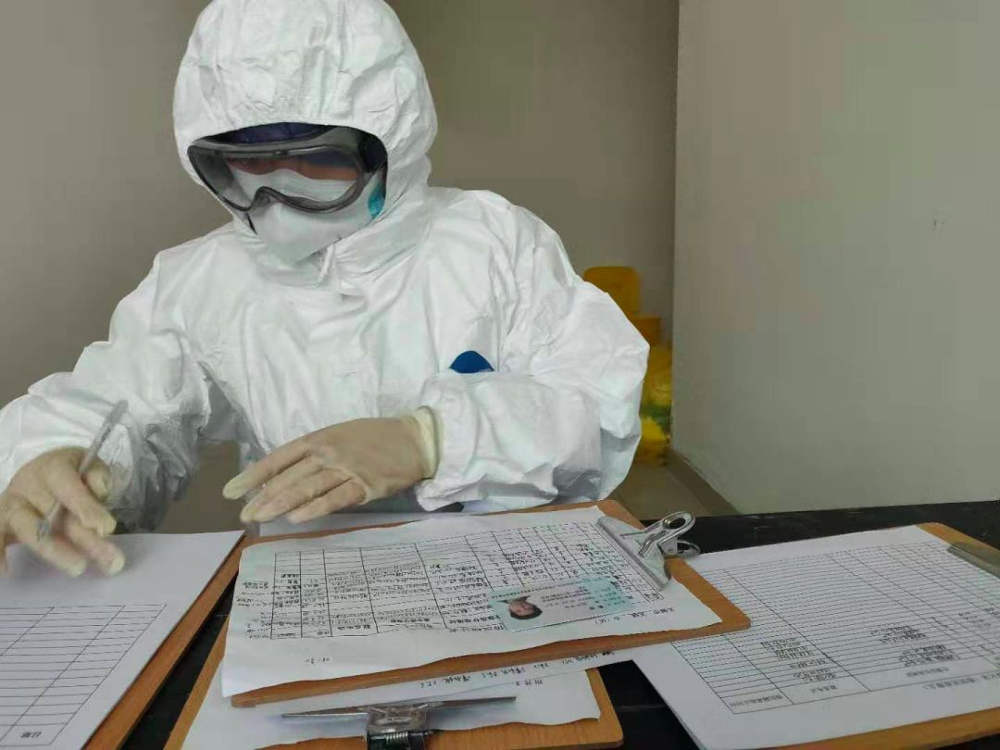
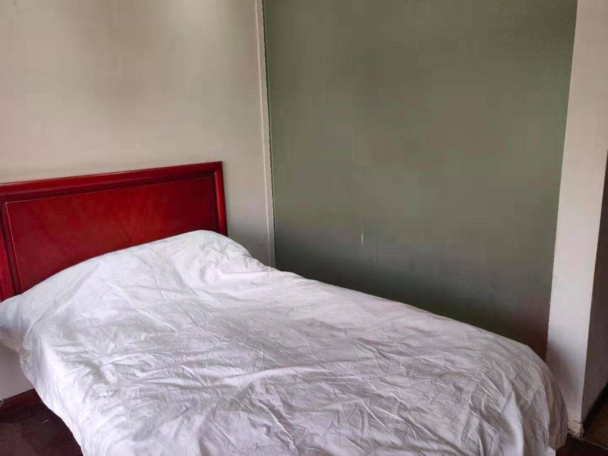
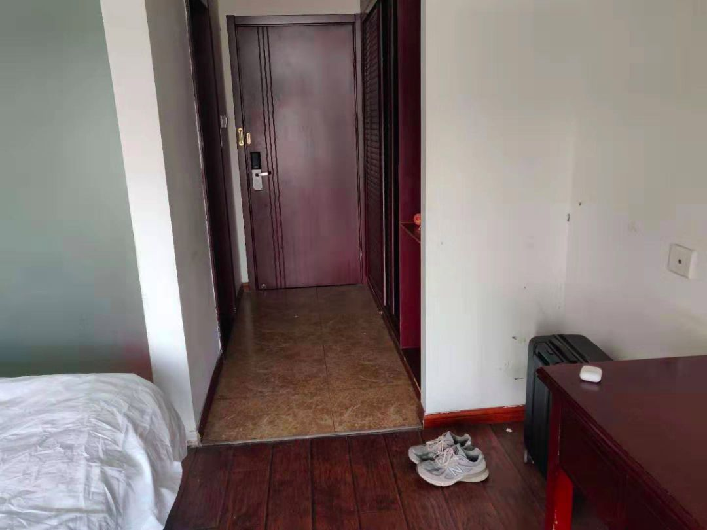
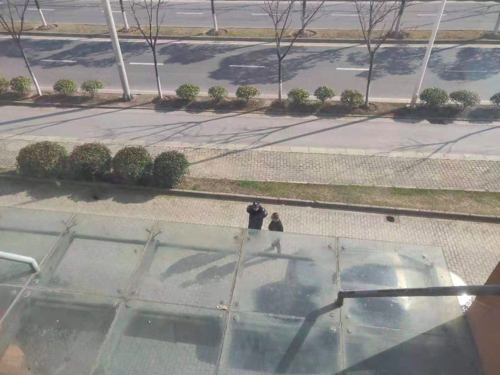

叶青：建议设立公共卫生安全副省长
原文链接 备份链接 非常时期，武汉成了全国人民挂念、祈福的城市。封城后，武汉人民的真实生活是什么样？ 随着疫情援助的展开，又有哪些容易忽略的问题？ 正和岛自1月26日起特别推出《叶青：我在武汉疫区的第N天》专栏。叶青是一位定居武汉40年的 …
播放音乐 | 阅读效果更佳
感谢 | 您对霍超LEGAL的关注、阅读与分享
昨天飞机刚刚落地，手机开机给爸妈报了平安，人们开始涌动，起来从行李架上收拾东西，飞机上的广播突然响起，”乘坐本次航班的旅客 霍超先生，因为您先前乘坐的航班发现了新型冠状病毒确诊患者，请您先到登机口进行检查，其他乘客请保持在自己的座位不动….”
早在柬埔寨的时候，几乎时刻都会忍不住在手机里刷疫情新闻的我，刚看到官方所公布柬埔寨出现第一起确诊病例的时候，环球同此凉热，流言四起中，最普通的医用外壳口罩从一包1美元飙升到了10美元，在各类真假信息的包裹下，第二天去了西哈努克港当地较好的医院备案登记，但看到当地落后的医疗条件，发现可能都远不能比得上国内一线城市社区医院的诊疗环境，只能最基本的检查。在那之后，作为一个自身高度怀疑有接触确诊感染患者可能的人，就尽可能的做好防护，不仅仅是对自己，更是对遇到的每个人尽责。
海关人员和医护人员十分地耐心对我做了体温监测和健康情况的问询，一切无恙，但说是因为通过公安所抓取的大数据明确我的确和确诊患者有过同机的经历，所以依照目前疫情的特殊情况，要就地隔离，这反而使我安心了很多，与其自己无由的猜疑，不如有着这样明确的回答，并且如今已身处国内，祖国的医疗的软硬条件足以让我安心许多，至今还记得家人嘱咐从西哈努克港过关时，务必要在护照里夹上5美元的小费，免得海关的人员会折腾行李。

_机场隔离检测区_，2020年1月30日__
之后的经历，对于我来说，就是很多的第一次了。在海关人员友善的指引下，第一次走过了空旷的外交礼遇通道；在医护人员亲切的带领下，第一次坐上了医院的救护车；在隔离人员细心的教导下，办理了隔离入驻的相关手续…..
就如同置身大银幕一般，一幕幕就在我眼前发生了。

_外交礼遇通道_，2020年1月30日__

救护车内，2020年1月30日

_隔离区内_，2020年1月30日__

_办理入住_，2020年1月30日
如果说是否有怀疑，或者说是否有顾虑，这必然是有的，但是毕竟这么多天在中外媒体全方位、多角度、立体式的宣传中明白这次疫情绝非一朝一夕，也更绝非能够掉以轻心，作为一个普通的守法公民，如今所能做的，就是尽可能多一点的配合，尽一份力，相信只要通过通过阴寒的隧道，就可以看见辉煌的光亮。
在回来的飞机上，还特地看了《卡桑德拉大桥》，天灾永远都不是最可怕的，可怕是的人祸，隔离入住一路上的有条不紊，足以安心。
当然，隔离入住的生活条件和我预想的也差距不大，利用工业区单人房改造的隔离住宿，可以保证基本的生活，但也仅仅是基本的生活，肯定远没有居家隔离的惬意舒适，昨天到了打扫一下也就疲倦的休息了。不过好在自己这次出行前，带了一个5T硬盘…里面有着许多还未修过的照片和还未看过的电影…

隔离房间内，2020年1月31日

隔离房间内，2020年1月31日

隔离房间窗外，2020年1月31日
当然在进入隔离区的同时，我也多了一批近在咫尺却不能谋面的网友们，每个人进来的具体原因我也不得而知，不过好像看起来大家也都很和睦的样子，甚至有一些看起来很欢乐的对话…
还有几个得知我已被隔离观察的小伙伴，贴心的给我一些适合蜗居生活的游戏项目、电影资源乃至安慰红包…让我提前感知了将来这段隔离生活的不易和苦涩。

“ 3楼 隔离群 ”，为保护个人隐私，聊天截图有做部分处理

__“ 3楼 隔离群 ”，为保护个人隐私，聊天截图有做部分处理
今早起床，开始整理相机里的照片，又让我看到了自己在离开柬埔寨的前一晚，趁着落日余晖，独自在海边走，遇到这么一个当地人，独自在海边用沙子堆着吴哥窟，在旅途的浮光掠影中，还可以看到这么一个经历过红色高棉饱受苦难的民族，依旧有人有着希望，有着向往，有着对未来的美好追求。

西哈努克港海边，2019年 1月29日
—End—
文 | 霍超
插曲 | 《在希望田》- 朴树
封面插图 | 霍超
正文摄影 | 霍超
封底视频 | Every Leica has a Soul
长按二维码
关注 | 公众号

点 在看 留下你的印记
谢谢一路有你＼( ^▽^ )／
Huochao
谢谢支持！
长按二维码向我转账
谢谢支持！
受苹果公司新规定影响，微信 iOS 版的赞赏功能被关闭，可通过二维码转账支持公众号。
原文链接 备份链接 非常时期，武汉成了全国人民挂念、祈福的城市。封城后，武汉人民的真实生活是什么样？ 随着疫情援助的展开，又有哪些容易忽略的问题？ 正和岛自1月26日起特别推出《叶青：我在武汉疫区的第N天》专栏。叶青是一位定居武汉40年的 …
原文链接 备份链接 这里是大学生的新媒体实验室 ∆ 再坚持几天，快了…… 轮到你了按： 这是摄影师蔡颖莉隔离在家的第8天。8天前，她与所供职的财新网7位记者抵达武汉新型冠状病毒疫情现场采访。在经历了14小时的一线拍摄后，被迫在武汉封城前撤 …
原文链接 备份链接 我叫张丽（化名），是武汉某医院隔离病房的护士。我们医院从1月6号、7号开始接收新型冠状病毒肺炎病人。 2019年12月31日，我们第一次收到针对华南海鲜市场密切接触人群排查的文件类指令，问我们每一个人有没有去过海鲜市 …
原文链接 备份链接 编者按 这篇约稿来自一名化名为“平安”的武汉大学生，记述了她从返乡、封城，再到过年所经历的种种。这个特殊的春节，绝望与希望同在，寂静与喧嚣并存。身处「风暴中心」，她的心理有什么样的变化？让我们一起来看看她的五日。 “ …
原文链接 备份链接 *************▲*************1月24日，在武汉大学中南医院重症隔离病房，医护人员为病人治疗。 （新华社记者 熊琦/图） 全文共*2789*字，阅读大约需要6分钟 “黄冈市19日晚间获得了第一批 …